While gardening can be a wonderful hobby, it can quickly turn into a thorny and splintery hassle without the right pair of gloves.
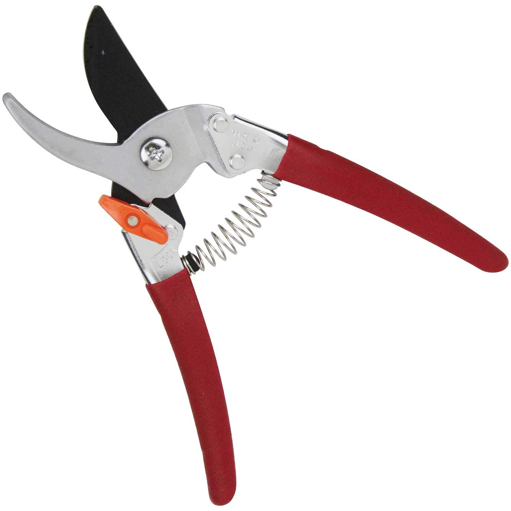
Pruning Shears
RM 10.00
Information:
While gardening can be a wonderful hobby, it can quickly turn into a thorny and splintery hassle without the right pair of gloves.
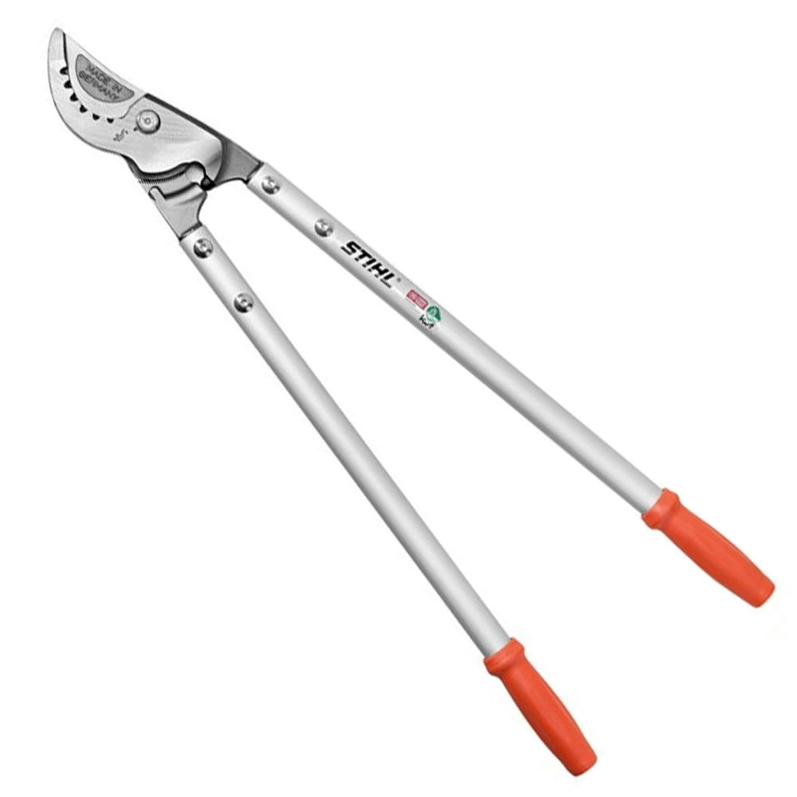
Loppers
RM 120.00
Information:
Another cutting tool, loppers are basically long-handled pruners used to trim hard to reach areas and cut thicker branches. The long handles provide the leverage it takes to cut through branches up to an inch or more in diameter. There are anvil and bypass types, just like pruners. Handles generally range from 16 to 36 inches.
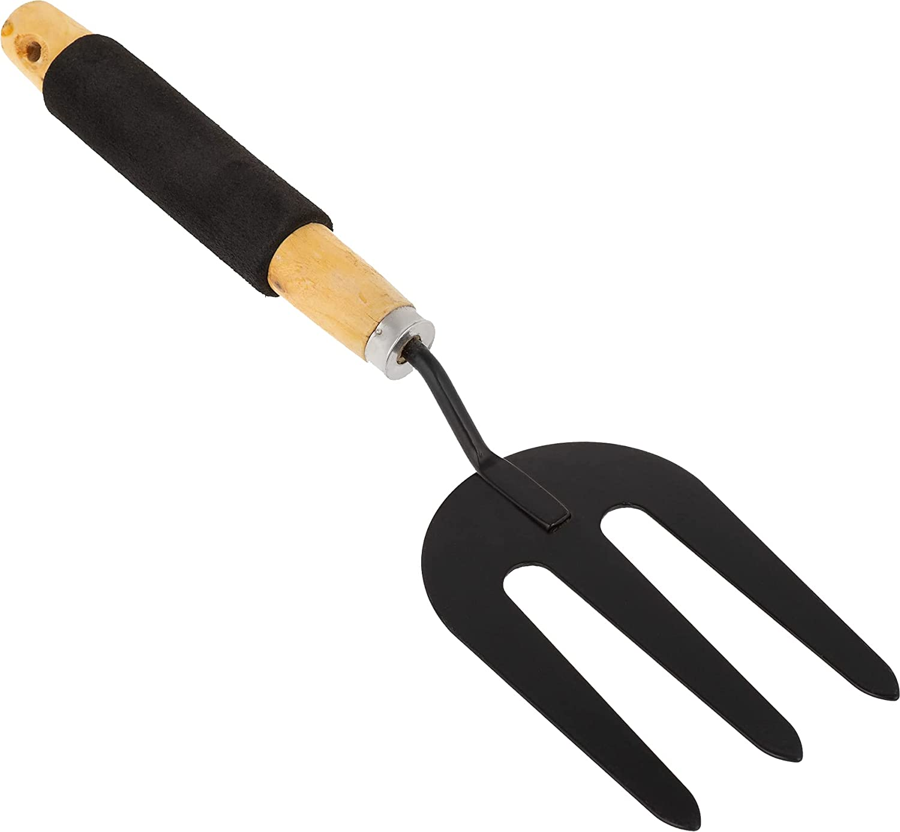
Garden Fork
RM 8.00
Information:
An efficient tool for turning soil, garden forks can dig into dense soil better than a spade.
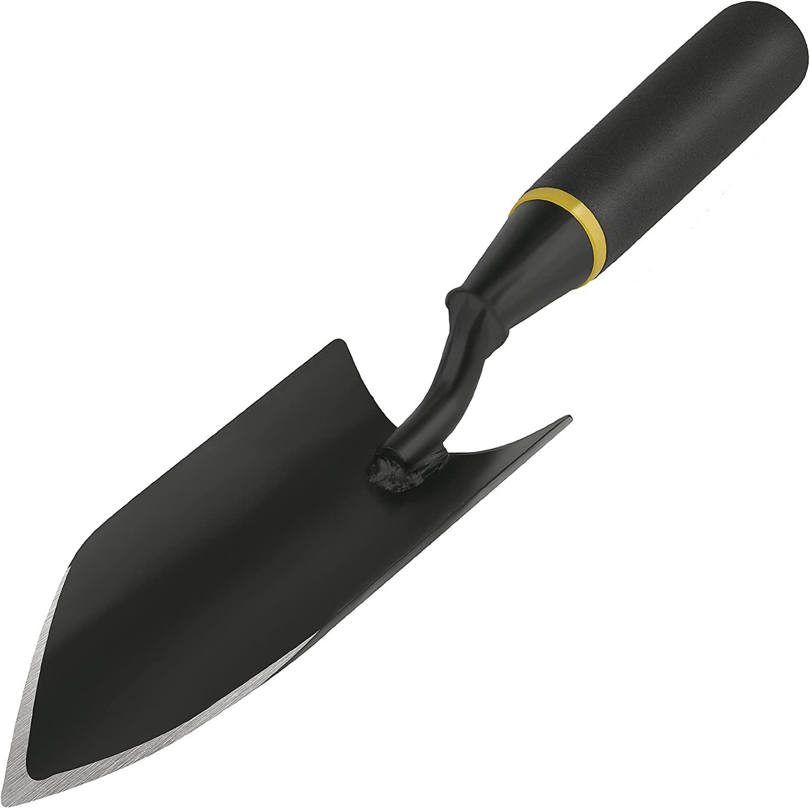
Hand Trowel
RM 8.00
Information:
The essential hand tool, trowels are wonderful for transplanting bedding plants and herbs, planting containers, and taking out weeds.
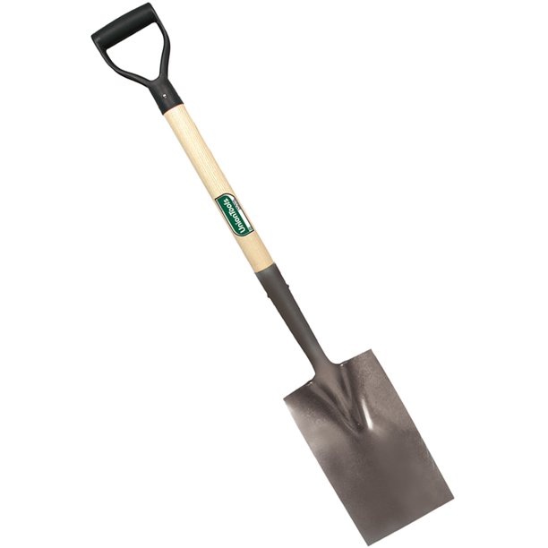
Spade
RM 10.00
Information:
These short-handled square shovels are garden workhorses. They make easy work of digging holes for plants, edging, lifting sod, and moving small mounds of dirt from one area to another. This tool can be more on the pricey side, but a good spade will last you the rest of your gardening life.
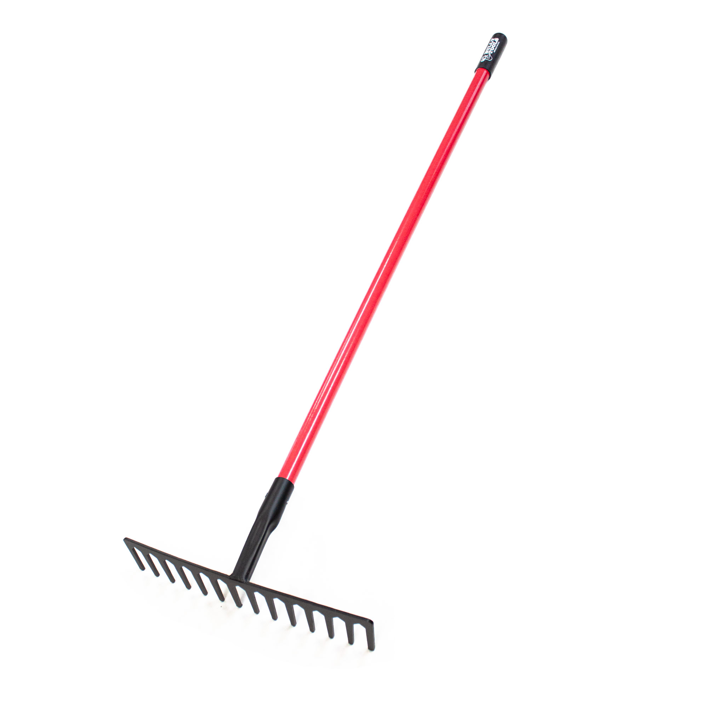
Rake
RM 15.00
Information:
When leaves and debris fall, your sturdy rake is there to whisk them away. Rakes come in a wide variety of styles and sizes, but a great starter is a standard leaf rake.
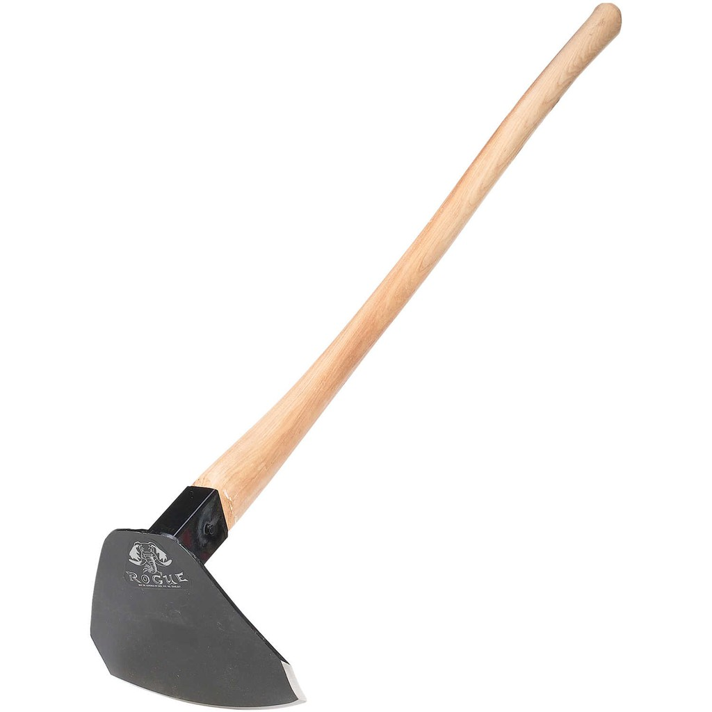
Hoe
RM 20.00
Information:
Your type of garden will dictate what type of hoe is best for you. A veggie garden may require a sturdy, wide hoe. If you have perennial gardens, a more delicate touch and a thinner hoe may be required. Hoes are useful in preparing garden and flower beds and cutting down weeds.
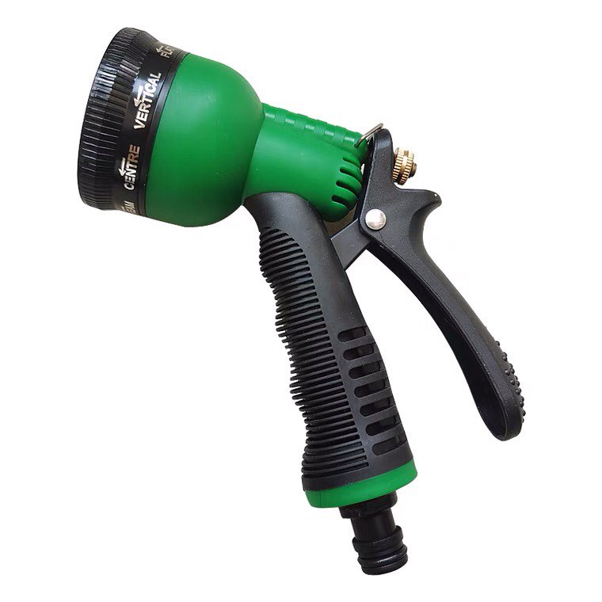
Garden Hose
RM 20.00
Information:
Water is the foundation of your garden’s life and it’s important that your garden hose can reach and spray every area. There are three basic hose diameters: ½-inch (avg 9 gal per minute), 5/8-inch (avg 15 gal per minute), and ¾-inch (up to 25 gal per minute). An adjustable nozzle puts you in control of the water pressure and spray radius.
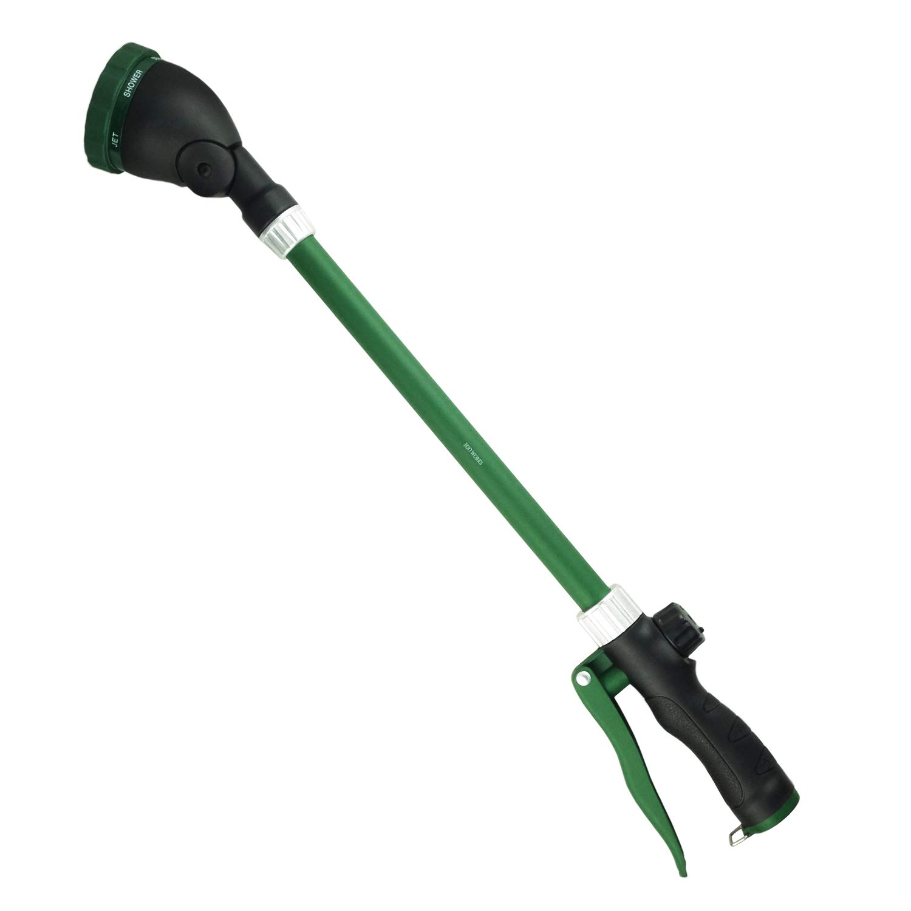
Watering Wand
RM 20.00
Information:
There are 2 basic types of watering cans, plastic or metal. There are hundreds of styles, colors, sizes and nozzle options.
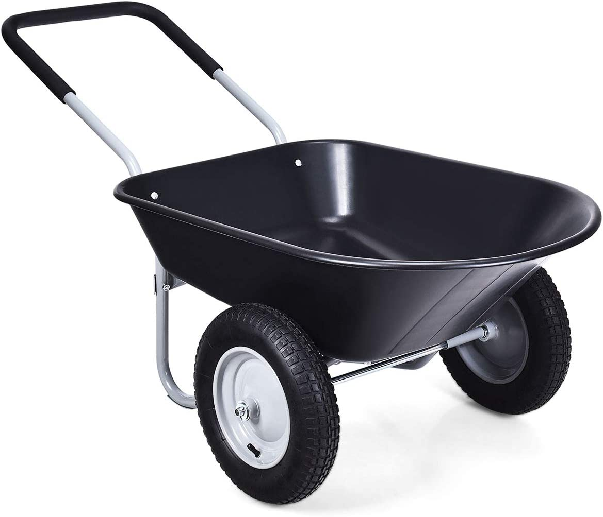
Wheelbarrow
RM 94.00
Information:
If your backyard has extra soil to be moved around, compost or mulch that needs to be added to garden beds, or any other heavy lifting and moving project, a wheelbarrow can help you haul hundreds of pounds!
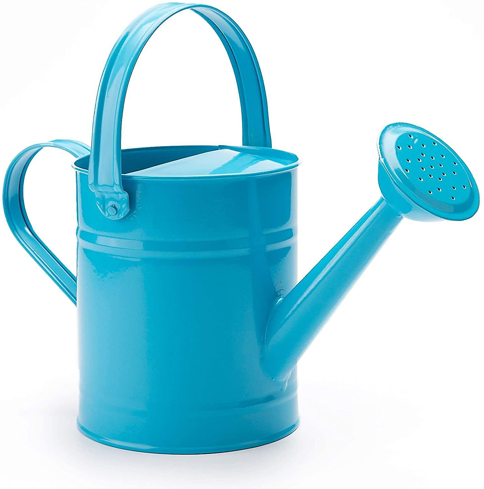
Watering Can
RM 12.00
Information:
Sturdy metal with anti-rust powder coating treatment;Beautiful & bright color and 1.5 liter volume design.Two handles provide more convenient way to carrier it arround the garden or beach.Great gift idear for kids, or for you who wanted a small watering can to watering the indoor or outdoor small plants.Overal Size: 27.5L*13.5W*23.5H(Unit:CM) OR 10.8L*5.3W*9.3H(Unit:INCH), Volume: 1.5L (Equal to 0.4gal. or 51oz).Produktbeschreibung